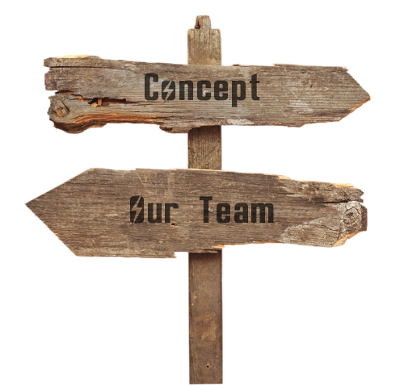

FALLOUT 2024. Unity

Хаб – это крупный торговый город. Фактически это перевалочный пункт для проходящих мимо караванов. И поэтому Хаб можно с гордостью назвать «Центром торговли в Пустоши». Здесь активно работают посольство НКР, Братство Стали и другие внешние силы. Хаб находится под управлением Городского Совета, в который входят владельцы крупных торговых компаний: «Красный караван», «Дальнобойщики», «Торговцы водой», «Мохаве Экспресс», а также уважаемые граждане города.
Местная торговая столица поделёна на несколько районов:
Кроме того, в городе находится множество производственных и научных комплексов: мастерские, госпиталя и лаборатории. Но все необходимые ресурсы приходится добывать в Пустоши.
С внешней стороны Хаб защищён крепкой стеной с автоматическими турелями. Ведь когда-то город выдержал осаду армии Создателя, а позже нападение рейдеров.
Рейдерские группировки вернулись в окрестности Хаба, собрав новую коалицию из разношёрстных банд. Среди них особо выделяются Ханы, Гадюки, Шакалы и остатки армии Создателя. Рейдерам не удалось взять Хаб приступом, поэтому они отступили и закрепились в Джанктауне.
Для отражения рейдерских набегов на торговые пути в окрестности Хаба прибыла армия НКР, которая разбила военный лагерь в окрестностях неподалеку. Возможно, их появление обусловлено не только самоотверженным желанием защищать ближних?
В данный момент за городскими стенами идут переговоры о вступлении Хаба в Республику. Мнения членов Городского Совета разделились. Многие жители города выступают против присоединения. Для достижения консенсуса было принято решение провести общее голосование среди жителей города. Кажется, или руководство НКР пытается сделать всё возможное, чтобы решение жителей изменилось?
Запустить голозапись
В 2024 году наша команда едет ополчением в город Хаб, куда мы с радостью готовы принять, как новичков, так и опытных ролевиков.
Во что играть?
Мы опытная команда, которая постепенно сформировалась из разных игроков и последние 7 лет ездит вместе на различные проекты. Где мы могли с вами пересекаться?
Что мы предлагаем?